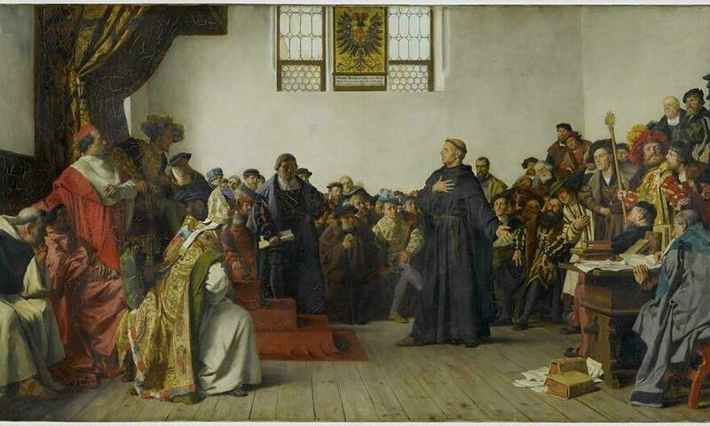
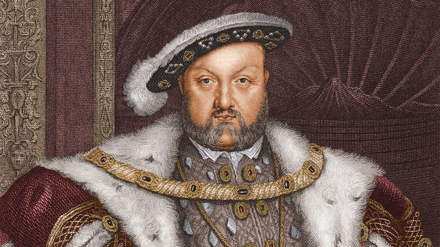

Sarena Oad
The Reformation (also called the Protestant Reformation) was a religious movement towards the age of reason that swept through Europe during the 1500s and laid the foundations for the religious structures and beliefs that define the continent to this day. The Reformation led to the formation of a branch of Christianity called Protestantism, which drew its name from its differences with the Roman Catholic Church. It is widely accepted that the Reformation began on October 31st, 1517, when German theologian Martin Luther nailed a series of 95 Theses on the power of indulgences to the door of Wittenberg Castle Church. These Theses directly challenged the Catholic Church’s position as arbiter between God and man. Specifically, they challenged the indulgence system, which allowed people to purchase forgiveness for their sins. Luther argued that God had given forgiveness as salvation to those who had faith in him. Luther’s work on the power of indulgences set in motion other challenges to the Catholic Church throughout Europe, such as John Calvin and Henry VIIIs’ movement, which challenged papal authority, and proposed new ideas on holy communion. They argued for redistribution of religious and political power, which led to wars, persecution and the so-called counter-reformation of the churches in response to protestants. Protestant reform in England began under Henry VIII in 1534 when the Pope refused to grant him marriage annulment. Denying the Pope's authority, he took control of the church and established a hybrid church, which embraced Catholic and Protestant ideals. By questioning faith and authority, some semblance of rationality was brought to society which would later serve to lead society further towards science and reason therefore representing an age of reason.

(Martin Luthors’ speech at the Diet of Worms-1521.)

(Henry VIII who began protestant reformation in England.)